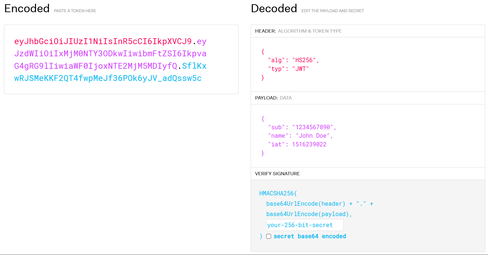
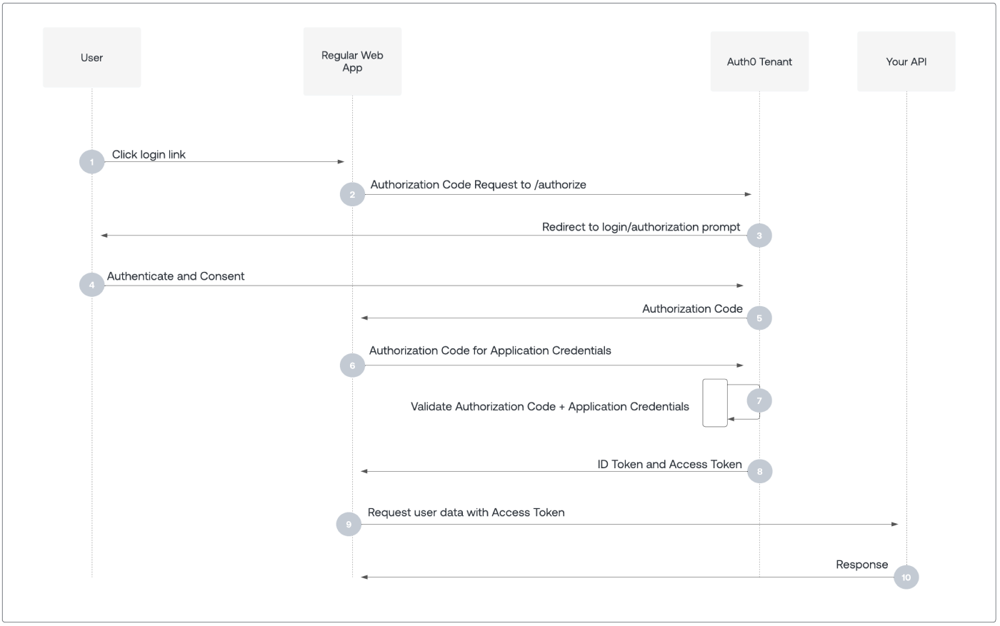

HTTP 安全相关知识⚓︎
约 2877 个字 33 行代码 预计阅读时间 15 分钟
参考资料
- 维基百科：CORS
- MDN：CORS
- 阮一峰的网络日志：跨域资源共享 CORS 详解
- Fetch: 跨源请求
- 密码学基础知识主要参考维基百科
CORS⚓︎
何时用到 CORS 请求？

跨域资源共享（cross-origin resource sharing，CORS）允许服务器标示除了它自己以外的其他源（域、协议或端口
实现流程⚓︎
浏览器将 CORS 请求分为简单请求（simple request）和非简单请求（non-simple request
- 请求方法为三者之一：
HEAD、GET、POST - HTTP 报头信息不超出以下几种字段：
AcceptAccept-LanguageContent-LanguageLast-Event-IDContent-Type：值为三者之一application/x-www-form-urlencoded、multipart/form-data、text/plain
注
- 这里的划分依据来自阮一峰的博客，与 MDN 文档上的略有出入
- 这只是简单的划分依据，实际上是根据请求是否有副作用来区分简单请求和非简单请求，以防副作用对服务器造成的影响。
简单请求⚓︎
简单请求中，浏览器会在 HTTP 报头添上一个 Origin 字段作为 CORS 请求，该字段的值为请求的源地址（协议 + 域名 + 端口
GET /cors HTTP/1.1
Origin: http://www.example.com
Host: api.alice.com
Accept-Language: en-US
Connection: keep-alive
User-Agent: Mozilla/5.0...
-
若同意，服务器的响应报头会多出一些字段：
Access-Control-Allow-Origin： （必须）其值要么是Origin的值，要么是*，表示接受所有域名-
Access-Control-Allow-Credentials： （可选）表示是否允许发送 Cookie，其值为布尔型，只能为true，想要禁掉的话直接删掉该字段（CORS 请求默认是不发送 Cookie 的）- 如果要发送 Cookie，除了将值设为
true外，还得在 AJAX 请求中进行如下设置，否则浏览器不会发送或设置 Cookie。此外，Access-Control-Allow-Origin必须设置明确的域名，不能设为*，否则也无法上传
- 有时即使删掉这个字段，浏览器还是会发送 Cookie，这时需要显式关闭
withCredentials
- 如果要发送 Cookie，除了将值设为
-
Access-Control-Expose-Headers： （可选）用来设置XMLHttpRequest对象的getResponseHeader()方法额外获取的响应头字段（往往是不太安全的字段） （比如下面的例子表明会调用getResponseHeader('Content-Length')，返回Content-Length字段的值）
Access-Control-Allow-Origin: http://www.example.com Access-Control-Allow-Credentials: true Access-Control-Expose-Headers: Content-Length Content-Type: text/html; charset=utf-8默认可以访问的响应头字段
Cache-ControlContent-LanguageContent-TypeExpiresLast-ModifiedPragma
这些字段无需用
Access-Control-Expose-Headers设置，它们时安全的响应头字段。 -
若不同意，服务器会返回一个正常的 HTTP 响应，它的报头没有包含
Access-Control-Allow-Origin字段，并给出错误消息（无法根据状态码判断，因为有可能显示 200） ，被XMLHttpRequest的onerror回调函数捕获。
非简单请求⚓︎
非简单请求的 CORS 请求会先进行一次「预检XMLHttpRequest 请求，否则报错。下面是一个预检请求的 HTTP 报头：
OPTIONS /cors HTTP/1.1
Origin: http://api.user.com
Access-Control-Request-Method: PUT
Access-Control-Request-Headers: X-Custom-Header
Host: api.admin.com
Accept-Language: en-US
Connection: keep-alive
User-Agent: Mozilla/5.0...
OPTIONS：预检请求的方法，表示该请求用于询问Origin：表示请求来自哪个源Access-Control-Request-Method：列出 CORS 请求用到的 HTTP 方法Access-Control-Request-Headers：指定 CORS 请求额外发送的头信息字段
下面是服务器对该预检请求的 HTTP 响应报头：
HTTP/1.1 200 OK
Date: Mon, 05 Aug 2024 13:21:56 GMT
Server: Apache/2.0.61 (Unix)
Access-Control-Allow-Origin: http://api.user.com
Access-Control-Allow-Methods: GET, POST, PUT
Access-Control-Allow-Headers: X-Custom-Header
Content-Type: text/html; charset=utf-8
Content-Encoding: gzip
Content-Length: 0
Keep-Alive: timeout=2, max=100
Connection: Keep-Alive
Content-Type: text/plain
-
Access-Control-Allow-Origin：表示允许发起请求的域名（可以有多个） ，*表示同意任意跨源访问。若服务器否定预检请求，处理方式几乎同上面的简单请求，控制台会打印如下报错信息： -
Access-Control-Allow-Methods： （必须）列出服务器支持的所有跨域请求的方法，所以是浏览器请求方法的超集 Access-Control-Allow-Headers： （若请求中有该字段时则必须）表明服务器支持的所有头信息字段，也是浏览器请求中同名字段的超集Access-Control-Allow-Credentials： （可选）同简单请求Access-Control-Max-Age： （可选）指定预检请求的有效期（缓存时间） ，是一个整数值，单位为秒
注
- 当
Access-Control-Allow-Origin: *时，Access-Control-Allow-Credentials的值默认为false，不能设为true Access-Control-Allow-Methods和Access-Control-Allow-Headers的值也可以设为*，但是对于附带身份凭证的请求，包括Access-Control-Allow-Origin的这三个字段的值不能设为*，必须指定具体的值
若预检请求通过，之后浏览器发送的 CORS 请求与简单请求相同，也会自动添加一个 Origin 字段，而且服务器的响应报头中也会有 Access-Control-Allow-Origin 字段。
实际使用上的细节⚓︎
- 所有的 CORS 限制都是由请求方（浏览器提供的 API，比如
FetchAPI和XMLHttpRequest）完成的，所有的验证由请求方负责。 - 所以，可以通过避免使用这些 API 来绕过 CORS。比如微信小程序开发中
request API没有实现 CORS、普通浏览器中一些没有 CORS 的请求方法等等。 - 服务器在 CORS 流程仅仅发了个响应，这一工作可以在路由部分完成。
登录、鉴权⚓︎
密码学基础知识⚓︎
- 散列函数：将数据打乱混合，重新创建一个叫做散列值的指纹，具有不可逆性。用于加密数据库中的密码字符串、错误校正、语音识别等场景，常用算法有 SHA-2 等。
- 对称加密：加密和解密时使用相同的密钥，常用算法有 AES 等。
- 非对称加密：用到公钥（用于加密，看作
 ，可公开）和私钥（解密，看作
，可公开）和私钥（解密，看作 ，必须保密
，必须保密） ，是两个不同的密钥，只要没有获得私钥就无法破解密文。常见算法有 RSA、ed25519 等。 - 对称 + 非对称加密：先用非对称加密加密对称加密的密钥，再用对称加密加密明文。
- 盐：当散列函数生成值的范围过小时，可用暴力枚举的方法得到散列函数的反函数表（称为彩虹表）来破解密文。所以在使用散列函数前需要在明文的任意固定位置插入特定的（可以是随机的）字符串，这种方法称为「加盐
」 ，可以有效阻止彩虹表攻击。 - 签名：一种防止公开消息（比如软件作者等）被篡改的方法。常用方法有 MAC，可理解为一种带密码的散列函数，只有带正确密钥的人才能得到相同的值。还可以用非对称加密，只要将私钥用于加密，公钥用于解密即可，这样的话只有私钥所有者才能发布信息。
- 传输层安全性协议（transport layer security, TLS
） ：用于保证 HTTPS 的安全性，由上面的对称 + 非对称加密方法传递信息，加上数字证书验证服务器身份的过程。
一个反面教材⚓︎


有以下几个问题：
- 这里采取直接传递密码的方式，攻击者可以中途拦截信息，造成密码泄露。而且攻击者可以在尚未破解密码的情况下，直接将原请求发送给服务器，这种攻击方式称为「中间人攻击
」 。 - 即使传输过程是安全的，但如果请求中包含密码，且请求次数较多，攻击者可能还有机会从请求信息中破解密码。
- 如果数据库直接存储密码本身，那么攻击者可以通过注入攻击的方法获取密码。
可以分别通过以下方法解决它们：
- 造成中间者攻击可行的原因是缺乏身份验证，服务器无法确认信息发送者的身份。所以需要用到 HTTPS 协议，它可以确认发送者的身份，而且能确保传输过程的安全。
- 第二个问题的解决方法是将权限认证分为登录和鉴权两步：
- 登录时需要用密码或其他认证方式证明身份；
- 登录后的其他请求无需再次认证，这就需要用到一些鉴权方式来实现，下面马上会将到。
- 让数据库存储「加盐」后的密码，这样即使泄露了数据库的“密码”问题也不是很大，同时也能让服务器不知道真正的密码，更加安全。
一些常见的鉴权实现⚓︎
Token 是最常见的一种鉴权实现，以下 token 鉴权的流程：
- 用户登录后，服务器生成一个代表用户身份的令牌，即 token，并发送给客户端
- 之后的请求中，客户端需携带 token 发起请求，服务器根据 token 验证身份
token 的安全问题来自客户端，它存储的数据不一定能保证安全，因此通过 token 过期来提高安全性，可根据安全性和用户体验设置合理的过期时间。
常见的 token 有 Session、API key、Bearer Token、Basic Auth 等等，下面对一些典型的 Token 展开介绍：
-
Session 是最简单的一种 token，它的使用流程类似上面提到的 token 鉴权流程，但其中的 token 是 sessionID。这样，服务器可以管理每个登录会话的状态了。
-
Json Web Token（JWT）是 token 的一种特殊实现。
- 它的特点是在 token 中携带一些用户信息（不能是敏感信息，因为信息未被加密
） ，生成时会使用一个密钥，对整个 token 用 HMAC 加密，防止被篡改。因为 JWT 自带用户信息，所以无需像普通 token 一样拿着这个 token 查找用户信息，从而减小鉴权压力，同时无需考虑数据同步的问题。 - JWT 内还包含用户权限的范围，这样通过解析 JWT 来直接确定用户权限，无需查找数据库
- JWT 是无状态的（context-less
） ，缺点是无法像会话那样强制注销 - 格式：
 - 它的特点是在 token 中携带一些用户信息（不能是敏感信息，因为信息未被加密
-
Oauth2 规范是一种用于第三方授权的鉴权方式，其核心内容是“如何让用户经由一个权限管理中心来赋予客户端权限”，共有四种方式（鉴权码流程、表单提交的隐式流程、资源所有者口令流程、客户端证书流程
） 。下面以第一种方式为例讲解：其中，Regular Web App 是应用程序，Auth Tenant 是“权限管理中心”，API 负责管理资源，应用需要请求 API 获取用户能获得的资源。
- 用户登录时，应用程序会向权限管理中心发送授权请求，然后权限管理中心将请求重定向至它提供的授权界面，用户在该页面登录即可。
- 登录成功后，权限管理中心携带授权信息，重定向到应用程序定好的地址上，完成授权。
- 之后的操作视情况而定：有的应用程序需要去全向管理中心进一步获取 access token，以请求 API 资源；有的应用程序只需获取必要的用户授权信息即可。
 ：
：评论区